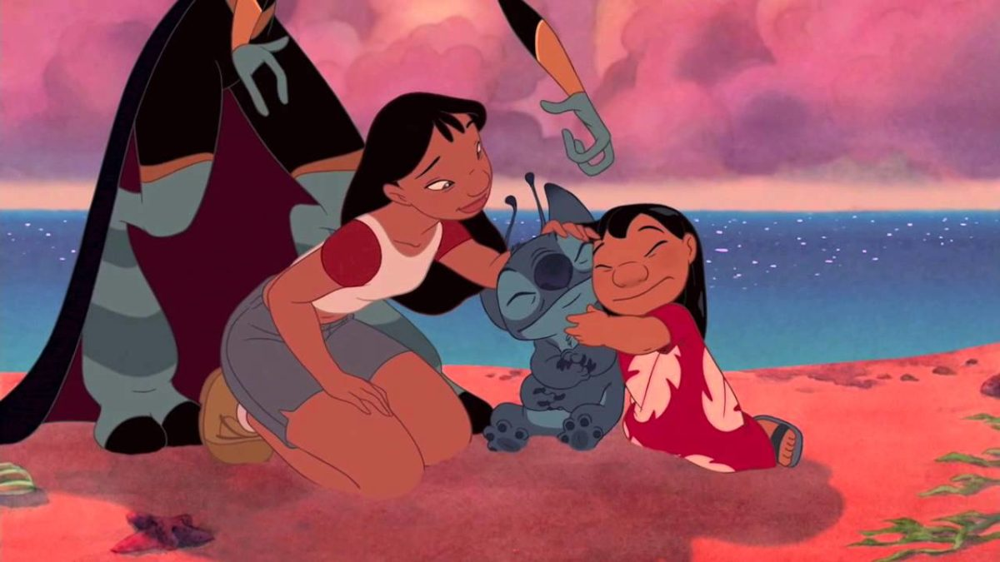

About Stitch
Stitch (also known by his species name/"birth" name Experiment 626, pronounced "six-two-six") is An illegally-made, genetically-engineered, extraterrestrial lifeform resembling a blue koala.
Stitch and his family
Stitch's Abilities :
- Feral mind
- Dense body tissue
- Fireproof skin
- Bulletproof skin
- Shockproof
- Hypercognition
- Many more
Stitch's Family and Friends
Stitch has a lovable family and friends. His love family is lilo. Click on the links below to read more about them: